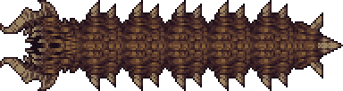

Desert Scourge

O Desert Scourge é um boss que pode ser spawnado no deserto pelo item Desert Medallion ou seja ele é o minhocão mortifero da morte matadora

Seus ataques consistem em avançar para cima do player e atirar
alguns projeteis faceis de desviar
Giant Clam

O Giant Clam é um boss que aparece somentemente no deserto submerso, cujo pode ser encontrado nas profundezas do deserto, ele não tem um spawn força ele apenas aparece naturalmente. Seus ataques consistem em ir sobre o jogador e cair de uma só vez e tambem invocar Clams que são uma versão dele só que menor e bem mais fraca. Esses são seus ataques no pre-hardmode